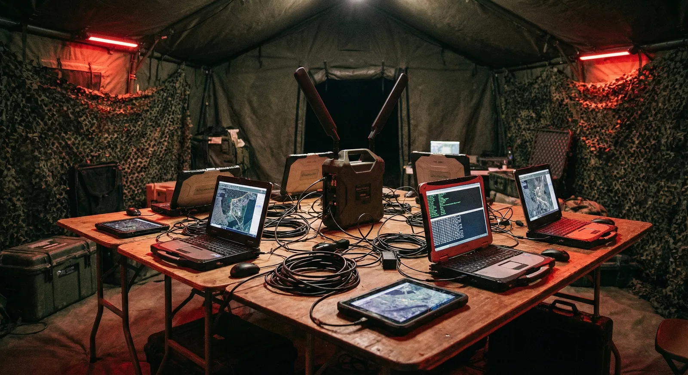
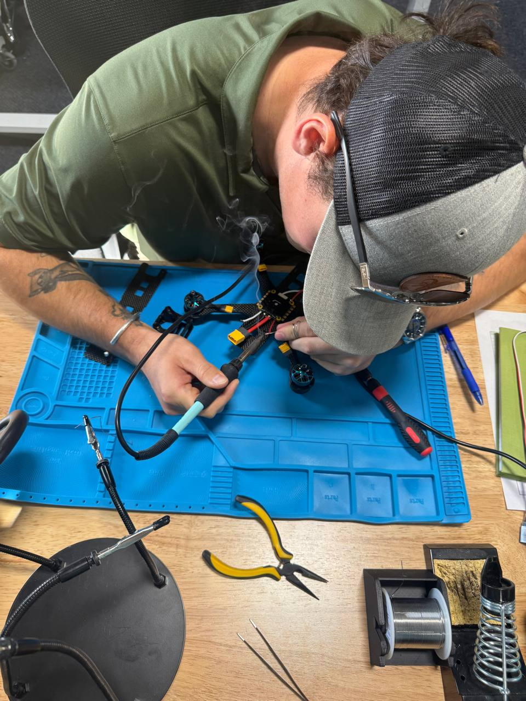

Deliver decisive, low-signature sensing to teams operating at the edge.
Ceradon Systems, LLC is a Utah-based engineering firm with roots in defense and special operations. We build passive RF sensing, autonomous detection, unmanned-systems planning, mission rehearsal, and mapping tools for operators, first responders, and security teams working in contested environments.
What we build
Six product lines across sensing, autonomy, planning, rehearsal, and mapping. Each line links to full specifications.
- Passive RF Sensing VANTAGE Passive Wi-Fi CSI sensing for zero-emission through-wall human detection and pose estimation.
- Autonomous Detection RAPTOR Real-time AI detection, classification, and targeting for UGVs, FPV drones, fixed-wing UAVs, and fixed installations. Field-retrainable, no cloud required.
- UxS Build Planning ARCHITECT Offline-first, open-source planning for COTS unmanned systems, nodes, drones, and RF mesh layouts.
- Mission Rehearsal KESTREL Structured sUAS mission rehearsal with aircraft-specific configuration and repeatable session scoring.
- Interior Mapping LANTERN Drone or walkthrough video to georeferenced interior floorplans for ATAK. No survey, no ground truth.
- 3D Generation POLYGEN Text-to-3D model generation through a multi-agent AI pipeline for rapid prototyping.
Who we are
Ceradon Systems is veteran-founded with roots in defense and special operations. We build tools for the people who actually use them: operators, first responders, and security teams who need reliable technology in contested environments.

Mission first
Every feature must strengthen detection accuracy or the intel picture supporting it.
Edge hardened
Offline-first, self-healing pipelines that run on low-power hardware and survive austere deployments.
Security aware
Secure boot, signed releases, and audit trails preserve trust across distributed teams.
Operator empathy
Human-centered UX for operators under stress. Fast, unambiguous insights without clutter.
Security & ethics
Vantage, our passive RF platform, never records video or audio. Processing stays local, logs are redacted for PII, and exports are encrypted. Passive sensing respects privacy while giving teams the intelligence needed to reduce collateral risk.
- ▹ Signed firmware, secure boot, and tamper logging for field hardware.
- ▹ Role-based access for dashboards and CLI tooling.
- ▹ Export-control-aware configurations for compliant sharing.
Doing business with Ceradon
As a verified Service-Disabled Veteran-Owned Small Business, Ceradon Systems is eligible for sole-source and set-aside contract awards. SAM.gov registration is active; CAGE and UEI are listed above and in the footer of every page.
For procurement inquiries, contact us directly or reach out through your contracting office.
Contact us